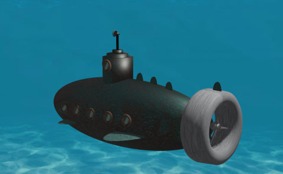
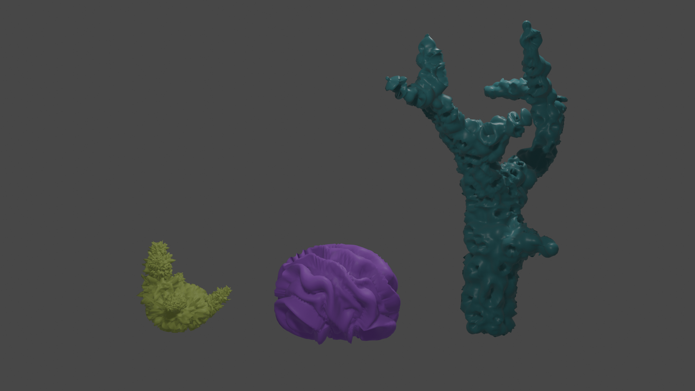

Herzlich Willkommen
Mein Portfolio
Way of Life
Eins meiner neusten Musik-Projekte
Elektronika-Ballade Charlie Chaplins berühmter Rede in "The Great Dicatator"
Auch auf Soundcloud
Bisherige Abgaben in Computer Grafik
Erstellt mit Blender
Blender HIER downloaden


